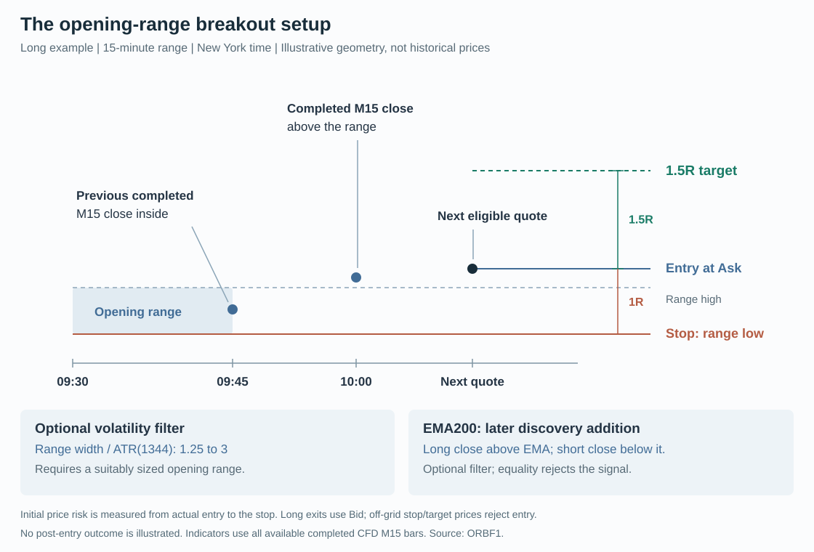
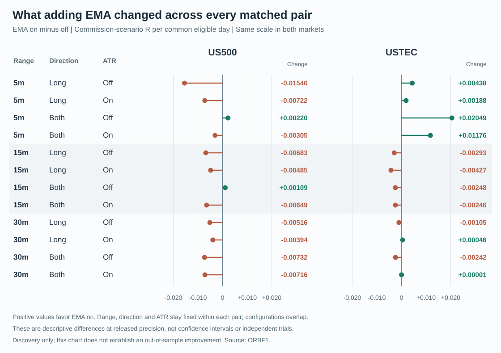
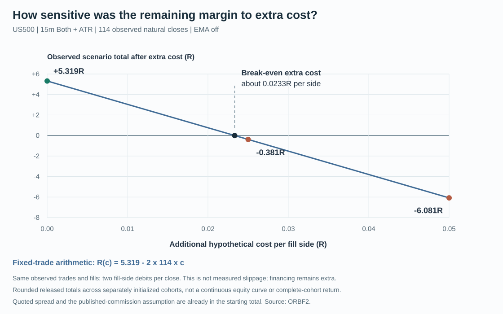

Opening-range breakout: filters and later performance
Another opening-range breakout study: define the setup, compare range and filter choices, then carry frozen candidates into later historical data.
Decision. No candidate promoted. Later results weakened, the remaining positive margin was sensitive to costs, and the available evidence did not establish positive expectancy.
Main limitation. This was a retrospective historical evaluation with incomplete coverage, not a live forward test. The EMA extension has no qualified later result.
The setup and the research question
The reference setup measures the first 15 minutes after the 09:30 New York cash open. A completed fifteen-minute midpoint candle must close outside that range after the preceding close was inside it. Entry uses the next eligible quote, the stop sits at the opposite boundary, and the target is 1.5 times initial price risk.
Midpoint is the average of Bid and Ask; execution uses the tradeable quote side. Off-grid stops and targets are rejected without rounding. Positions may span days, with one open position per entry session and possible overlap between sessions.
I compared range lengths, directions and an average true range (ATR) volatility filter, then added an exponential moving average (EMA) trend filter during discovery. The matrix covers 48 configurations across US500 and USTEC CFDs.


A setup schematic, not a historical trade. No later price outcome is invented. ATR and the later EMA extension are optional admission filters. · Open figure
Research evidence: Discovery and filter comparisons
The same setups in discovery and later history
All four selected US500 setups had positive average gross R in discovery. The long-only alternatives turned negative on observed natural closes in both later cohorts. The bidirectional ATR setup stayed slightly positive, with a much smaller average outcome.
R expresses outcomes relative to initial trade risk. Gross R includes quoted spread through Bid/Ask execution but excludes commission and other account charges. The chart compares unchanged setups across periods and includes natural-close counts.
| US500 bidirectional ATR candidate | Average gross R per close |
|---|---|
| Discovery | +0.187R |
| Later cohort A | +0.063R |
| Later cohort B | +0.056R |

All plotted setups have EMA off. Cohort A has incomplete coverage, so these observed-close outcomes do not establish a complete-cohort return. The comparison is descriptive and does not establish why performance changed. · Open figure
Research evidence: Discovery and filter comparisons · Later historical evaluation
What adding the EMA actually showed
EMA permits long breakouts only above the moving average and shorts only below it. Each matched pair holds the other settings fixed.
Discovery results were mixed. Profit factor sometimes improved; drawdown often fell with fewer trades. Neither establishes better daily returns. None of the 27 fixed comparisons survived multiple-testing correction; they tested configuration differences, not every strategy's absolute expectancy.
All later-tested US500 setups had EMA off. The shortlisted EMA-on USTEC candidate was source-blocked, so EMA has no qualified out-of-sample result.


All 24 matched comparisons, on the common discovery calendar. Positive values favor EMA. These overlapping configurations are descriptive comparisons, not independent trials or individual significance estimates. · Open figure
Research evidence: Discovery and filter comparisons · Later historical evaluation
How much margin remained after costs?
The bidirectional ATR candidate made approximately +5.32R across 114 natural closes under the published-commission assumption. This combines separately initialized cohorts, not a continuous account return or a complete daily series.
An extra hypothetical 0.025R per fill side reduces that total to approximately -0.38R, before extra financing. The trades stay fixed; this does not estimate actual slippage. Historical all-in broker net performance remains unknown.


The line crosses zero at approximately 0.0233R extra per fill side, using rounded public aggregates. It describes only these observed closes; financing remains extra. · Open figure
Research evidence: Later historical evaluation
What the research can support
The candidate list was frozen before its later strategy outcomes were opened, but the evaluation was historical and some related work had exposed later data. It should not be described as a completely untouched forward test.
Incomplete confirmation coverage in cohort A prevents the full primary daily-return statistic from being estimated. Positions still open at the cutoff were censored rather than counted as ordinary exits. The supplemental estimate from the fully observed cohort B remained inconclusive.
Discovery missing-source sessions contributed zero recorded execution while remaining in the calendar denominator. The later analysis instead leaves unavailable daily outcomes missing. Neither convention turns absent quotes into an observed no-signal day.
Research evidence: Discovery and filter comparisons · Later historical evaluation
The decision and the next useful test
The study supports withholding promotion: the long-only results deteriorated, the remaining positive margin was fragile, and the EMA extension still lacks a qualified later evaluation.
The next useful evidence would be a complete, admissible later sample evaluated under frozen rules and declared costs. Retuning on the outcomes already examined would create a new development exercise and require a fresh evaluation sample.
Research evidence: Discovery and filter comparisons · Later historical evaluation
Data and verification
The public figures can be rebuilt from released aggregates. The original market backtests require private quotes and implementations, so they cannot be independently rerun from this website.
The released aggregates reproduce the charts and selected arithmetic. They do not contain the daily inputs needed to recompute the reported bootstrap intervals or adjusted significance tests.
Research choices and final decisions were directed by the repository author, with AI-assisted implementation and test automation.
Complete research record · Technical appendix · Published aggregate data · Reproduce the figures